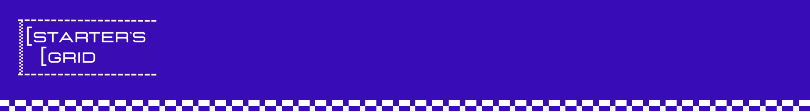
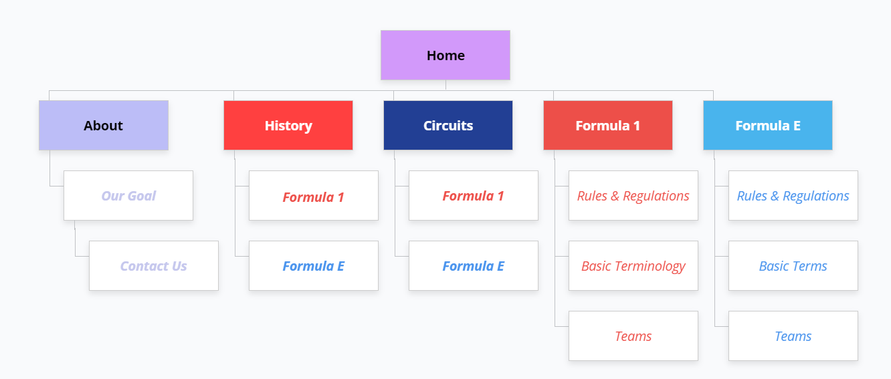
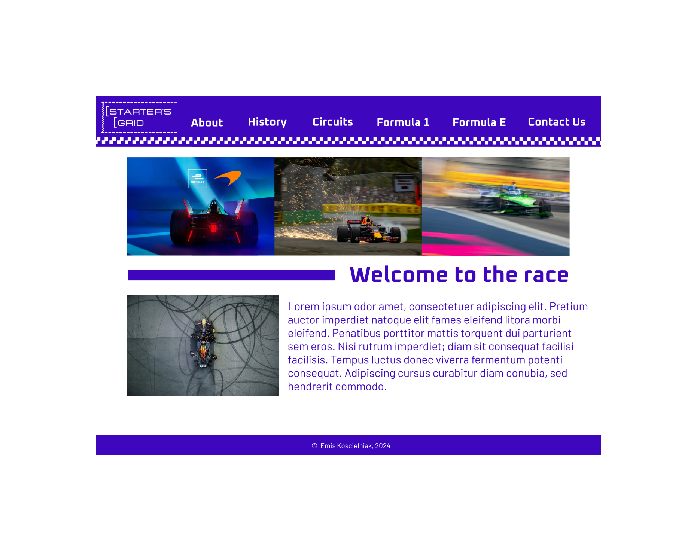
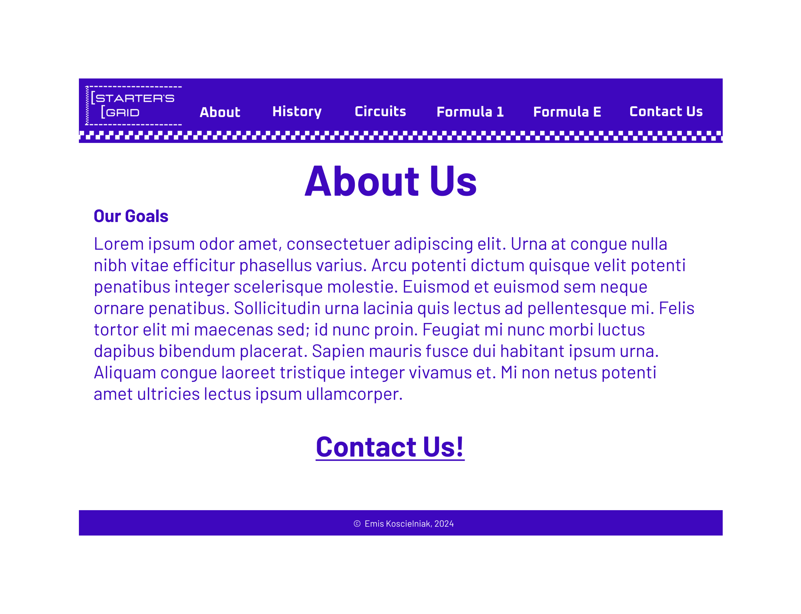
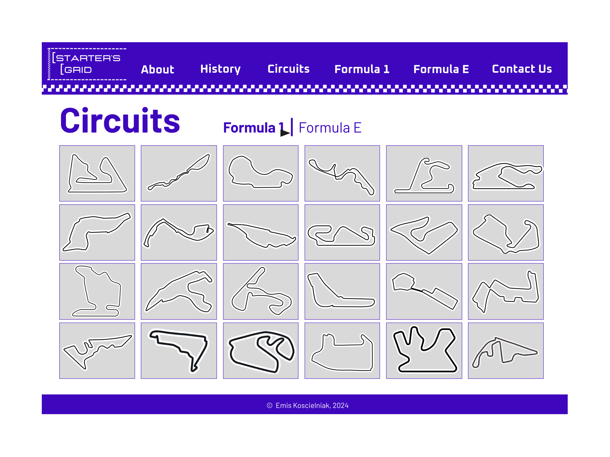
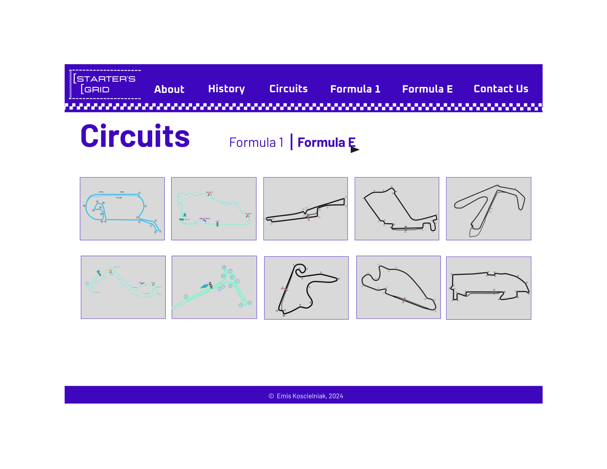
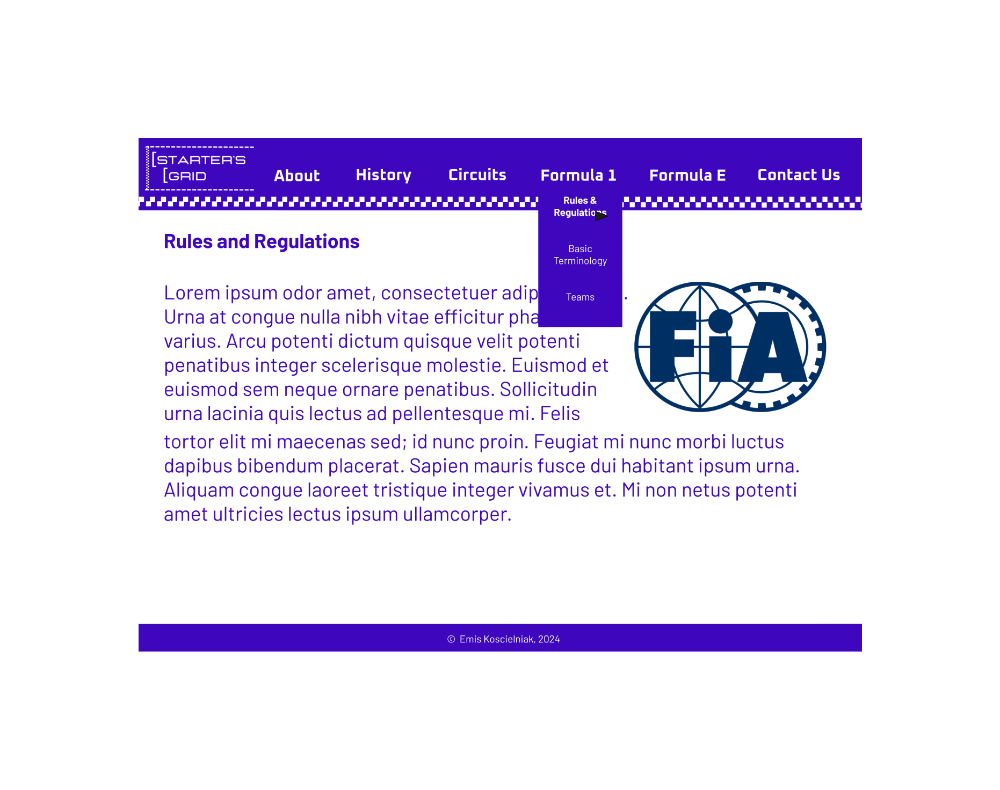
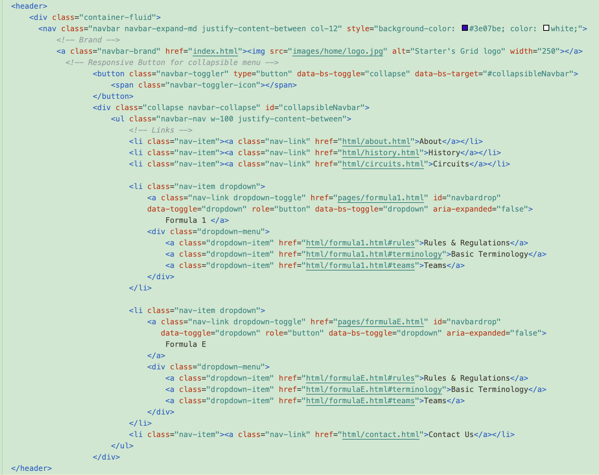
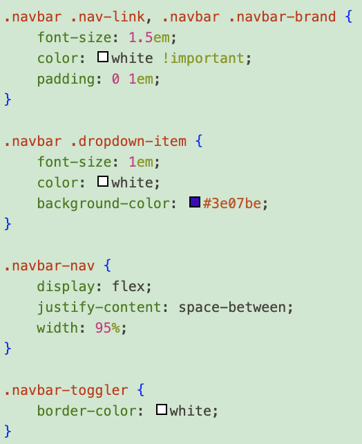

Project Overview
Starter's Grid is a fully responsive educational website designed to introduce beginners to the exciting world of Formula 1 and Formula E racing. This project showcases the complete design and development process, from information architecture to a live, code-based product.
The website utilizes mobile-first development principles to organize complex motorsport content into an accessible, engaging learning experience.
The Challenge
Motorsport racing, particularly Formula 1 and Formula E, can be intimidating for newcomers due to complex rules, technical terminology, and extensive history.
Design Goals:
• Make racing accessible to complete beginners
• Organize complex information in an intuitive way
• Create an engaging, visually appealing experience
• Ensure full responsiveness across all devices
Information Architecture
I began by mapping out all the content and organizing it into logical categories that would make sense to beginners. This sitemap shows the complete structure and relationships between pages:

Sitemap showing content hierarchy and navigation structure
Content Structure:
• Introduction: What is racing? Why should you care?
• F1 Basics: Rules, teams, and terminology
• Formula E: Electric racing, sustainability, and unique features
Design Process

Homepage wireframe with clear navigation and content hierarchy

About page wireframe

Formula 1 Circuits page wireframe

Formula E Circuits page wireframe

Formula 1 page wireframe
Development
Taking a mobile-first approach, I built the website using semantic HTML5, CSS3 with flexbox and grid, and Bootstrap for responsive design.
Technical Highlights:
• Bootstrap Framework: Leveraged Bootstrap's responsive grid system and components for efficient development
• Responsive Navigation: Mobile-first navbar with collapsible menu and dropdown functionality
• Performance: Optimized images and minimal custom JavaScript for fast loading
• Accessibility: Semantic HTML, ARIA labels, and keyboard navigation
• Version Control: Git workflow with GitHub for code management
Responsive Design

Website displayed across mobile, tablet, and desktop devices

Bootstrap responsive navigation with collapsible menu

CSS snippet showing navbar styling and responsive design
Key Features
The final solution includes several key features that make motorsport learning accessible:
Progressive Disclosure
Information revealed incrementally to avoid information overload for beginners
Visual Learning
Diagrams and images supplementing text for better understanding
Interactive Elements
Hover effects and animations enhance engagement
Mobile-First Design
Optimized for mobile learning on any device
Outcomes & Learnings
This project strengthened my skills in both design and development, demonstrating the ability to take a project from concept to a live product.
Key Achievements:
- Deployed live website accessible to real users
- Positive feedback from users with no prior racing knowledge
- Seamless experience across all device sizes
- Successfully created an educational platform that makes complex motorsport content accessible to beginners
- Implemented a complete information architecture that guides users through progressive learning
What I Learned:
• Content Strategy: Organizing complex information for various audiences
• Responsive Development: Building fluid layouts that work on any device
• Performance Optimization: Balancing visual richness with load times
• End-to-End Ownership: Managing all aspects of a project independently
Future Enhancements:
• Add interactive quizzes to test understanding
• Create a glossary of racing terminology
• Add a live leaderboard for ongoing races during the season
This project showcases the complete product development lifecycle from initial concept through final implementation, highlighting both design thinking and technical execution capabilities.